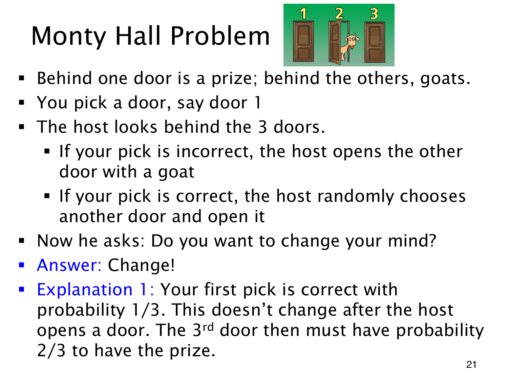

L1.10 · 第 21 页讲解原文
查看这一页课件

Monty Hall 的开门规则
三扇门有一个奖品、两只羊，奖品位置等可能。先选门 1，主持人知道奖品在哪，必定打开另一扇羊门；若两扇都能开，就等概率选择。随后可以换到另一扇未开门。
按奖品位置看，总是换门的结果如下：奖品在门 1 时输；在门 2 时，主持人只能开门 3，换门赢；在门 3 时，他只能开门 2，换门也赢。换门恰好在初选错误时赢，概率为 2/3；坚持原门则为 1/3，所以应换门。
剩两扇闭门，并不自动让概率变成各 1/2。主持人知情且保证展示羊，他如何选门本身提供了信息。
若进一步给定“主持人具体打开门 2”，本题的对称规则仍让门 1 后验为 1/3，另一闭门为 2/3；这里用到了初选正确时，他等概率开两扇门的规则。若改动这个规则，观察到具体开哪扇门后的后验可能不同，不能直接套用同一数字。